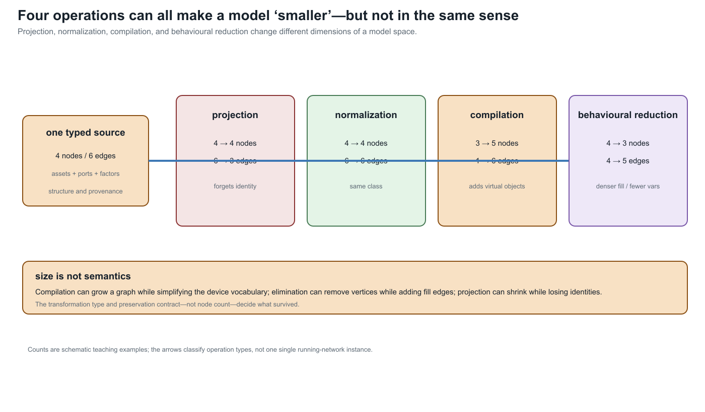

Projection, compilation, and reduction
Page status: foundational transformation definitions and scope boundaries.
Transformations that all produce a different graph can have fundamentally different meanings. The following vocabulary is adopted throughout this book.
Projection
Definition. A projection forgets attributes, types, distinctions, or internal structure without solving the governing equations.
Examples include:
- multigraph to simple graph by forgetting edge identity;
- conductor graph to phase-aggregated graph;
- detailed switchgear to a state-resolved bus view;
- weighted to unweighted topology.
A projection can be reversible only if the forgotten information is retained as side data or is uniquely inferable. Most are many-to-one.
Compilation or realization
Definition. Compilation replaces a high-level component with a network of lower-level components supported by a target mathematical formulation.
Compilation may introduce virtual nodes and branches. It is therefore not ordered by graph size. Multiwinding transformer compilation in PowerModelsDistribution is a practical example [42].
Compilation should ideally have:
- a semantics theorem or component-level equivalence test;
- stable provenance from virtual objects to the source device;
- a partial inverse that reconstructs the high-level object when the compiled subgraph still matches the compiler image;
- explicit handling of controls and limits attached to the source object.
Normalization
Definition. Normalization is a semantics-preserving rewrite into a chosen canonical form within an explicitly declared model class.
Examples might include:
- canonical conductor ordering and orientation;
- conversion of a grounding impedance annotation to an explicit shunt factor;
- merging two adjacent subdivisions of one homogeneous physical line;
- normalization of equivalent transformer parameter conventions.
Normalization is stronger than terminal equivalence because the target should remain a valid instance of the intended physical vocabulary. A general two-port equivalent is not necessarily a normalized line.
Exact behavioral reduction
Definition. Behavioral reduction eliminates hidden variables while preserving a declared external relation. It need not preserve internal physical structure.
Kron reduction is the principal linear example [17]. Schur elimination can introduce clique edges among the neighbors of an eliminated node. The reduced graph may therefore be denser and may contain branches with no physical counterpart.
Caliskan and Tabuada identify classes of homogeneous generalized electrical networks for which time-domain Kron reduction remains within compatible element classes [47]. Their result is especially important here: closure under reduction is a physical/model-class condition, not a generic consequence of variable elimination.
Approximate reduction
Definition. Approximate reduction preserves selected observables only up to a stated error over a stated operating domain.
Distribution-feeder reduction methods have addressed unbalanced phase models, mutual coupling, spatial variation of load and generation, and critical-bus voltage error [48]. Recent Opti-KRON work adds radiality and phase-connectivity objectives [49], while a separate extension targets radiality recovery [50]. These are valuable, but their use of "structure preserving" should not be confused with preservation of construction codes, asset identity, neutral grounding, protection, or individual decision constraints.
State-dependent topology quotient
Closed-switch contraction occupies a special category. It is exact for electrical connectivity under the assumption of ideal closed switches, but it is indexed by network state. Retaining only the quotient loses possible future switching states and switch-level operations. The source connectivity model and the quotient should therefore coexist [31, 33].
Why these transformations do not form one chain
- Compilation can increase graph size while reducing device vocabulary.
- Elimination can decrease vertex count while increasing edge density and constitutive complexity.
- An asset projection and a behavioral equivalent can preserve incomparable information.
- A state-dependent quotient is not a time-independent abstraction.
- An approximate reduced model can outperform an exact terminal equivalent for a chosen application metric while being less generally valid.

The counts in this teaching plate are schematic. Its point is the inversion: compilation can add virtual nodes and edges, while behavioural reduction can remove variables and create denser fill. A smaller drawing is therefore not evidence of a stronger reduction, and a larger drawing is not evidence of a less faithful one. The preservation contract and target factor class decide what the arrow means.
The resulting mathematical object is better viewed as a graph of model spaces and typed transformations than as a linear ladder.